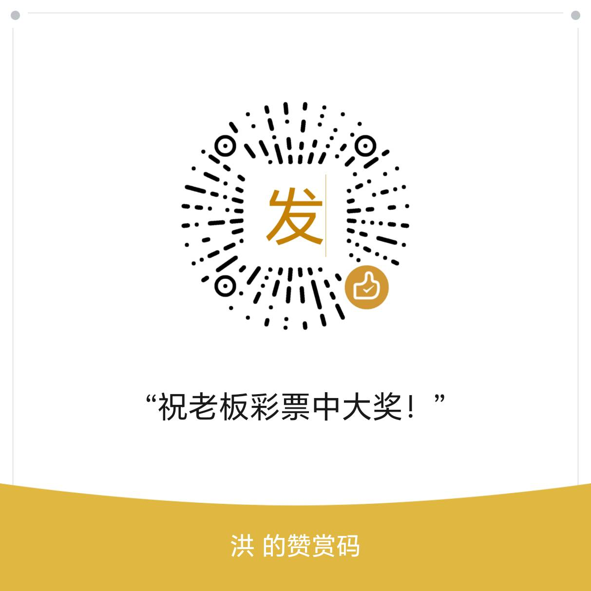

https://xiake.pro/github/?_360safeparam=503890531 作为 GitHub 加速入口（将目标 GitHub 地址作为 url 参数传入）。若加速入口参数格式变化，可直接使用 GitHub 原始/发布页链接。
| 组件 | 仓库 | 发布页 | 加速打开 |
|---|
等待测试…
| 模型 | 状态 | 渠道 | 能力 | 上下文 | 探测 | 操作 |
|---|---|---|---|---|---|---|
| 点击“刷新”加载 | ||||||
http://127.0.0.1:端口/v1，API Key 用 zen-gate 面板里的主密钥。http://127.0.0.1:HTTP端口；这样 Zen 免费额度按 WARP 出口 IP 计量。status=429、err=quota
等限额信号时自动换一个 WARP 出口 IP（受上方“自动换 IP”总开关约束，90 秒内只触发一次）。
opencode 直连时出口 IP 固定，容易被服务端按 IP 限流或封禁。本程序托管 Cloudflare WARP， 让 opencode 的请求从 WARP 出口发出；并在检测到异常时自动重连 WARP 更换出口 IP。 它同时把 WARP 的 SOCKS5 转成标准 HTTP 代理，避免 opencode / Node 不支持 socks5 的问题。
warp-plus 到本目录的 bin/，
之后不再需要联网下载。GitHub 访问不畅时可在设置里填写下载镜像。warp-cli 可用。首次使用可能需要
warp-cli --accept-tos registration new。warp-plus.exe 时，在“设置”里指定路径即可。usque register，再让本程序托管。:: Windows CMD set HTTP_PROXY=http://127.0.0.1:7891 set HTTPS_PROXY=http://127.0.0.1:7891 opencode
# PowerShell $env:HTTP_PROXY="http://127.0.0.1:7891" $env:HTTPS_PROXY="http://127.0.0.1:7891" opencode
127.0.0.1:7891），停止时还原原设置。status=429、err=quota 等限额信号时，本程序会自动换一个 WARP 出口 IP，
opencode 重试即可继续使用（受“自动换 IP”总开关约束，90 秒内只触发一次）。http://127.0.0.1:8788/v1，
API Key 填 zen-gate 面板里的主密钥。zen-gate 端口与 WARP Control 控制台端口分开：
控制台默认 8787，zen-gate 默认 8788。